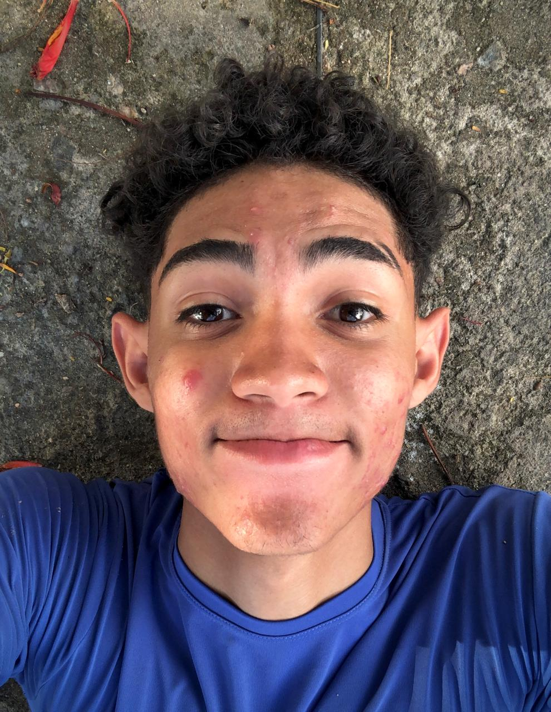

Jeanderson de Lima Araújo
Construindo sistemas, analisando dados e liderando soluções com foco em impacto real.
Estudante de ADS. Desenvolvedor focado em Java, POO, Banco de Dados e Análise de Dados. Premiado em inovação e Programação competitiva.
Sou estudante de ADS com uma abordagem focada em entender a lógica do problema e a arquitetura da solução antes de sair codificando. Atualmente possuo mais facilidade e segurança em Java e Orientação a Objetos, porém sempre estou buscando aprender mais e mais, desta forma estou aprofundando meus conhecimentos em Business Intelligence e Análise de Dados no projeto ofertado pelo OCA na UFCG.
Minha trajetória na tecnologia começou antes da faculdade: em 2023 ao conhecer a programção com uma professora muito querida que me mostrou que podemos solucionar problemas de diversas formas, e uma delas é por meio da tecnologia. Conquistei o 2º lugar no InterSESI de Programação e o prêmio de Projeto Destaque na Mostra de Iniciação Científica (MIC) ao desenvolver uma solução web sobre impacto e viés de algoritmos em redes sociais.
Fora das telas, atuo há 6 anos como fotógrafo freelancer (cuidando de eventos, organização e atendimento direto ao cliente) e como professor e tecladista na igreja. Essas experiências me deram a base técnica e humana que levo para o software: liderança, organização de processos, escuta ativa e atenção cirúrgica aos detalhes."

Fotografia
6 anos atuando na fotografia freelancer me ensinaram a ouvir o cliente, alinhar expectativas, gerenciar pacotes e entregar resultados sob alta pressão em eventos de grande porte.
Didática & Liderança de Equipes
Experiência como professor e líder de equipes acadêmicas. Capacidade de explicar conceitos complexos de forma simples, conduzir grupos e facilitar o alinhamento do time.
Trabalho em Equipe & Harmonia
4 anos tocando teclado em grupo. Desenvolvi escuta atenta, percepção de nuances e capacidade de adaptação rápida em tempo real — essenciais para o trabalho em equipe.
Premiações & Reconhecimento
2º lugar na Olímpiada de Programação (InterSESI PB - 2023) e Projeto Destaque: "Embelezar sem Embranquecer" (MIC -2023) .Com foco em entender a lógica do problema e o impacto social da tecnologia.